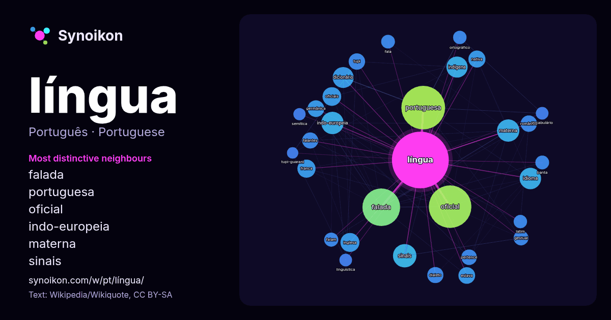

Português · palavra popular
língua
“language” · As palavras encontradas ao seu redor em 1945 ocorrências da Wikipédia, Wikiquote.

Vizinhos mais característicos
- falada 124×
- portuguesa 72×
- oficial 63×
- indo-europeia 50×
- materna 47×
- sinais 41×
- dicionário 40×
- idioma 34×
- franca 30×
- indígena 28×
- eslava 28×
- germânica 27×
- românica 27×
- inglesa 24×
- tupi 24×
- gestual 23×
- falantes 23×
- nativa 23×
- dialeto 21×
- oficiais 20×
× = quantas vezes mais do que no texto geral da Wikipédia.
Vizinhos mais frequentes
- portuguesa 191
- oficial 181
- falada 142
- país 82
- família 64
- sinais 55
- indo-europeia 50
- materna 50
- idioma 46
- indígena 45
- dicionário 44
- inglesa 36
- oficiais 35
- franca 33
- português 33
- antiga 31
- nativa 29
- antigo 28
- eslava 28
- germânica 28
Em contexto
- comunicação, veja Linguagem. Para outros sgnificados, veja Língua (desambiguação). A língua é um órgão muscular na boca de um tetrápode típico. Ela manipula Wikipedia snippets · Língua
- Para outros significados, veja Língua portuguesa (desambiguação). Língua portuguesa, também designada português, é uma língua indo-europeia românica flexiva Wikipedia snippets · Língua portuguesa
- Língua inglesa, ou simplesmente inglês (em inglês: English), é uma língua indo-europeia germânica ocidental que surgiu nos reinos anglo-saxônicos da Inglaterra Wikipedia snippets · Língua inglesa
- falantes de segunda língua. É a língua oficial de 20 países, bem como uma das seis línguas oficiais das Nações Unidas. É a segunda língua nativa mais falada Wikipedia snippets · Língua castelhana
- Língua francesa (français, AFI: /fʁɑ̃sɛ/) é uma língua românica com cerca de 136 milhões de falantes nativos no mundo. É língua oficial em 26 países, Wikipedia snippets · Língua francesa
- Nota: "Língua latina" redireciona para este artigo. Para outros significados, veja Línguas românicas. Língua latina ou latim é uma antiga língua indo-europeia Wikipedia snippets · Latim
- romaniz.: [ˈdɔʏ̯tʃ] (escutar)) é uma língua germânica ocidental que é falada principalmente na Europa Central. É língua oficial e a mais falada na Alemanha Wikipedia snippets · Língua alemã
- também são levados em conta. É a língua oficial de quatro países - Itália, Suíça, San Marino e Vaticano -, e usada como língua co-oficial em partes da Albânia Wikipedia snippets · Língua italiana
Mais palavras
- arte
- ciência
- clima
- comida
- coração
- cão
- deus
- dinheiro
- família
- força
- gato
- história
- morte
- natureza
- ouro
- ponte
- saúde
- trabalho
- trem
- verdade
- vida
- água
Pré-calculado em 2026-10-09 com as configurações padrão (±5 palavras, corpus médio). O mapa interativo pode atualizá-lo com dados ao vivo.
Interface traduzida automaticamente; correções são bem-vindas.